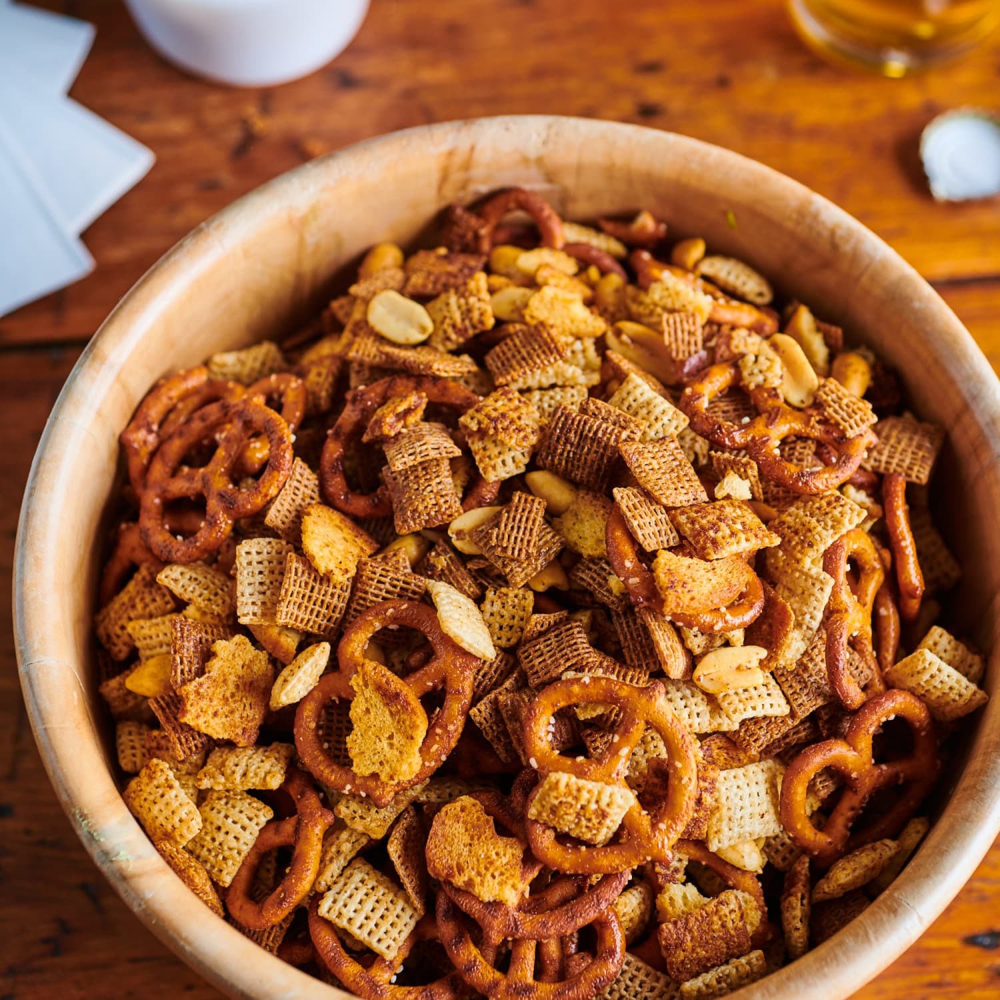

OVEN-BAKED CHEX MIX

Home made, oven baked Chex cereal mix is an amazing snack you just can't stop eating. I used to eat this all the time as a kid when my grandmother would make it. It wouldn't last but a few days at most between my family and I.
Ingredients
- 8 tablespoons (1 stick) unsalted butter
- 2 tablespoons Worcestershire sauce
- 2 teaspoons seasoned salt, such as Lawry’s
- 1 1/2 teaspoons garlic powder
- 1 teaspoon onion powder
- 2 cups bagel chips
- 4 1/2 cups Rice Chex cereal
- 4 1/2 cups Wheat Chex cereal
- 3 cups bite-sized pretzels
- 1 cup roasted, salted peanuts
Steps
- Arrange 2 racks to divide the oven into thirds and heat the oven to 250°F. Line 2 rimmed baking sheets with parchment paper.
- Place 8 tablespoons unsalted butter in a medium, microwave-safe bowl. Microwave in 10-second intervals, stirring between each, until fully melted, 50 to 60 seconds total. (Alternatively, melt in a small saucepan on the stovetop over low heat.) Add 2 tablespoons Worcestershire sauce, 2 teaspoons seasoned salt, 1 1/2 teaspoons garlic powder, and 1 teaspoon onion powder, and whisk well to combine.
- Place 2 cups bagel chips in a large bowl and lightly crush them with your hands into bite-sized pieces. Add 4 1/2 cups Rice Chex, 4 1/2 cups Wheat Chex, 3 cups pretzels, and 1 cup peanuts, and lightly toss to combine.
- Pour half of the butter mixture over the Chex mixture and gently toss to coat. Pour in the remaining butter mixture and gently toss again so all the pieces are coated in butter.
- Transfer the mixture onto the prepared baking sheets and spread into an even layer. Bake, stirring every 15 minutes, until lightly browned and crisp, 45 to 50 minutes total. Let cool for 10 minutes on the baking sheets before serving.
- Leftovers can be stored in an airtight container at room temperature for several weeks.
Return Home